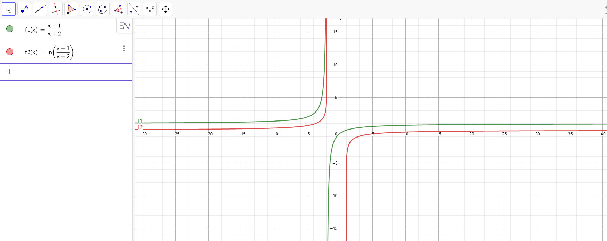

Costruire il grafico a partire dal dominio
Studiare una funzione logaritmica contenente una frazione, comprendendo:
- come determinare correttamente il dominio;
- la relazione tra il segno del logaritmo e il valore del suo argomento;
- come utilizzare limiti e derivata per costruire un grafico qualitativo;
- perché una trasformazione familiare può restringere erroneamente il dominio.
Studia e traccia il grafico
Determina dominio, intersezioni con gli assi, segno, limiti, asintoti e intervalli di monotonia. Prima di aprire lo svolgimento, prova a disegnare a mano libera le due parti del grafico.
APRI LO SVOLGIMENTO RAGIONATO
1. Dominio
L’argomento del logaritmo deve essere strettamente positivo:
I valori che separano gli intervalli sono x = −2, che annulla il denominatore, e x = 1, che annulla il numeratore. La frazione è positiva quando numeratore e denominatore hanno lo stesso segno.
La funzione è definita anche per x < −2: in questo intervallo numeratore e denominatore sono entrambi negativi, ma il loro rapporto è positivo.
Il confronto sul grafico

2. Intersezioni con gli assi
Per trovare le intersezioni con l’asse x imponiamo:
Il logaritmo vale zero quando il suo argomento vale 1, ma l’equazione (x − 1)/(x + 2) = 1 conduce a x − 1 = x + 2, che è impossibile. La funzione non interseca l’asse x. Non interseca neppure l’asse y, perché x = 0 non appartiene al dominio.
3. Segno della funzione
Confrontiamo l’argomento del logaritmo con 1:
Per x < −2 l’argomento è maggiore di 1 e f(x) > 0. Per x > 1 l’argomento è compreso tra 0 e 1 e f(x) < 0.
4. Limiti e asintoti
La retta y = 0 è un asintoto orizzontale.
Le rette x = −2 e x = 1 sono asintoti verticali.
5. Monotonia
Nei due intervalli del dominio il denominatore è positivo, quindi f′(x) > 0. La funzione è crescente sia in (−∞, −2) sia in (1, +∞).
Grafico qualitativo
Il ramo sinistro si mantiene sopra l’asse x, si avvicina a y = 0 per x → −∞ e cresce fino a +∞ avvicinandosi a x = −2. Il ramo destro parte da −∞ in prossimità di x = 1, cresce restando sotto l’asse x e si avvicina a y = 0 per x → +∞. La funzione non raggiunge mai il valore zero.
Studiare l’argomento nel suo insieme
La condizione iniziale deve essere posta sull’intera frazione, (x − 1)/(x + 2) > 0, non separatamente sul numeratore e sul denominatore. Se il dominio è sbagliato, anche uno svolgimento successivo formalmente corretto descriverà soltanto una parte della funzione.
Vuoi confrontare il tuo procedimento?
Se un passaggio ti ha creato difficoltà, puoi raccontarmi come hai affrontato l’esercizio e da quale punto vorresti ripartire.